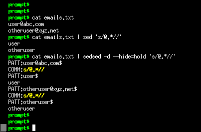

sedsed can debug, indent, tokenize and HTMLize your sed scripts.
In debug mode it reads your script and add extra commands to it. When executed you can see the data flow between the commands, revealing all the magic sed does on its internal buffers.
In indent mode your script is reformatted with standard spacing.
In tokenize mode you can see the elements of every command you use.
In HTMLize mode your script is converted to a beautiful colored HTML file, with all the commands and parameters identified for your viewing pleasure.
With sedsed you can master ANY sed script. No more secrets, no more hidden buffers.

-d option turns debug ON.--hide=hold options hides the HOLD SPACE buffer contents, because it is always empty on this example.PATT: lines on sedsed's output shows the PATTERN SPACE buffer contents.COMM: yellow lines show the command which is being executed.user and otheruser lines are the sed's normal output.$ sign at the end of PATT: lines represent the end of the buffer.-f option reads the sed script from a file (just like in sed).--indent option reformats complicated sed scripts into beautiful human-friendly scripts.-d option turns debug ON.HOLD: lines shows the HOLD SPACE buffer contents.x command.\n that is inserted in PATTERN SPACE between the two lines joined by the G command.Besides indent and debug, sedsed also has the ability to convert your sed scripts to nice HTML pages, with the syntax highlighted just as in Vim Editor, with nice colors!
prompt$ cat email-linker.sed
h;s|.*|<link>&</link>|;x;/@/{s/@.*/'s email:/;G;}
prompt$ sedsed --htmlize -f email-linker.sed > email-linker.sed.html
Here is the resulting HTML file:
Visit the sed Website for examples of more than 60 sed scripts HTMLized.
Sedsed is a single file application. Just download and run it.
Found a bug? Please submit an issue.
prompt$ sedsed --help
usage: sedsed OPTION [-e sedscript] [-f sedscriptfile] [inputfile]
OPTIONS:
-f, --file add file contents to the commands to be parsed
-e, --expression add the script to the commands to be parsed
-n, --quiet suppress automatic printing of pattern space
--silent alias to --quiet
-d, --debug debug the sed script
--hide hide some debug info (options: PATT,HOLD,COMM)
--color shows debug output in colors (default: ON)
--nocolor no colors on debug output
--dump-debug dumps to screen the debugged sed script
--emu emulates GNU sed (INCOMPLETE)
--emudebug emulates GNU sed debugging the sed script (INCOMPLETE)
-i, --indent script beautifier, prints indented and
one-command-per-line output do STDOUT
--prefix indent prefix string (default: 4 spaces)
-t, --tokenize script tokenizer, prints extensive
command by command information
-H, --htmlize converts sed script to a colorful HTML page
| sedsed Output | |
|---|---|
PATT: |
Contents of the PATTERN SPACE buffer |
HOLD: |
Contents of the HOLD SPACE buffer |
COMM: |
The sed command being executed |
$ |
Terminates the PATT and HOLD contents |
... |
Lines that don't begin with any identifiers are STDOUT |
| Action Options | |
--debug |
DEBUG the sed script |
--indent |
Script beautifier, show indented source |
--tokenize |
Script tokenizer, show info about each command |
--htmlize |
Converts sed script to a colorful HTML page |
| Tips | |
| less -r is your friend to page the colorful output of -d | |
Use the --hide option to a cleaner debug output |
|
--htmlize send results to STDOUT, so redirect it |
|
sedsed was tested successfully against all the 5 stars (*****) extreme sed scripts from the Bonzini's excellent grab-bag site. So all the sed commands and structures wrote on these scripts, which are EXTREME, are correctly parsed.
If you want to try at home, download and execute them this way:
echo -e "one\ntwo\nthree\nfour" | sedsed -d -f sodelnum.sed
echo -e "one\ntwo\nthree\nfour" | sedsed -d -f sort.sed
echo a{b{c{bla}}} | sedsed -d -f tex2xml.sed
echo "aa='abc" | sedsed -d -f config.sed
(date +'%w %d' ; date +'%-m %Y') | sedsed -d -f cal.sed
echo 4 4 + p | sedsed -d -f dc.sed
YES! Now you can (try to) understand what happens inside the unbelievable dc.sed calculator. Check this great shot of a simple "4+4" becoming "8" :)